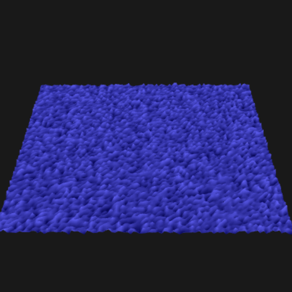
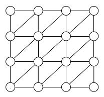

In this subtask you are asked to implement a fragment shader that clips every pixel against a triangle that is defined by the uniforms pointA, pointB and pointC.
The given code already renders a full size screen quad. To clip a pixel at the screen coordinates gl_FragCoord, you have to test against the three edges of the triangle.
If the pixel is outside you have to discard the pixel, otherwise you give the pixel the color that is defined by the uniform color.
The result should look like the left triangle in the picture below.
In this subtask you are asked to adjust the fragment shader of the previous sub task, such that you can render iso lines in the inside of the triangle.
An iso line contains the points that have the same distance to the contour of the triangle.
We want you to draw multiple iso lines, i.e. every iso line whose distance is a multiple of 14 pixels.
Therefore you first have to compute the distance d of a pixel to the triangle contour.
If the pixel is outside, you discard the pixel, otherwise you compute the distance to the nearest iso line.
If it is in the range of 1 pixel, you blend between the triangle color and the color of the iso line (black).
The result should look like the right triangle in the picture below.

In this task, you can use your vertex and pixel processing knowledge to animate a plane consisting of many triangles to let it look (a little) like water. The image on the right shows an example frame to give you a feeling what your animation should look like in the end.


The vertices for a grid consisting of nodes x nodes vertices is already given in file Advanced2.js.
The index buffer setup is still missing.
Right now, six random indices are pushed into the indices array, resulting in two random triangles in the canvas above.
Change the code to connect the vertices with triangles like in the picture above (example for nodes=4)!
When you are done, you should see a blue plane formed by nodes x nodes vertices connected with triangles.
Right now, the plane does not look like water at all. Change both vertex and fragment shader to animate the water surface: In the vertex shader, where you have control over the single vertices, change the height of each vertex according to a random sine function. In the fragment shader, where you have control over the single pixels, change their color according to their height.